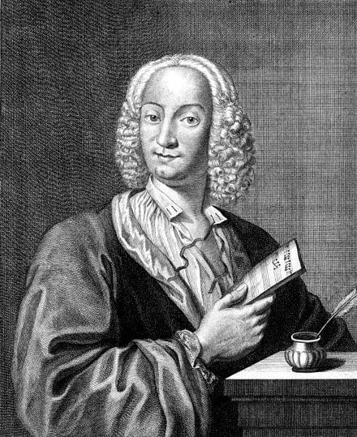

 (Antonio Lucio Vivaldi; Venecia, 1678 - Viena, 1741) Compositor y violinista italiano cuya abundante obra concertística ejerció una influencia determinante en la evolución histórica que llevó al afianzamiento de la sinfonía. Igor Stravinsky comentó en una ocasión que Vivaldi no había escrito nunca quinientos conciertos, sino «quinientas veces el mismo concierto». No deja de ser cierto en lo que concierne al original e inconfundible tono que el compositor veneciano supo imprimir a su música y que la hace rápidamente reconocible.
Autor prolífico, la producción de Vivaldi abarca no sólo el género concertante, sino también abundante música de cámara, vocal y operística. Célebre sobre todo por sus cuatro conciertos para violín y orquesta reunidos bajo el título Las cuatro estaciones, cuya fama ha eclipsado otras de sus obras igualmente valiosas, si no más, Vivaldi es por derecho propio uno de los más grandes compositores del período barroco, impulsor de la llamada Escuela veneciana (a la que también pertenecieron Tommaso Albinoni y los hermanos Benedetto y Alessandro Marcello) y equiparable, por la calidad y originalidad de su aportación, a sus contemporáneos Bach y Haendel.
Poco se sabe de la infancia de Vivaldi. Hijo del violinista Giovanni Battista Vivaldi, el pequeño Antonio se inició en el mundo de la música probablemente de la mano de su padre. Orientado hacia la carrera eclesiástica, fue ordenado sacerdote en 1703, aunque sólo un año más tarde se vio obligado a renunciar a celebrar misa a consecuencia de una enfermedad bronquial, posiblemente asma.
También en 1703 ingresó como profesor de violín en el Pio Ospedale della Pietà, una institución dedicada a la formación musical de muchachas huérfanas. Ligado durante largos años a ella, muchas de sus composiciones fueron interpretadas por primera vez por su orquesta femenina. En este marco vieron la luz sus primeras obras, como las Suonate da camera Op. 1, publicadas en 1705, y los doce conciertos que conforman la colección L'estro armonico Op. 3, publicada en Ámsterdam en 1711.
Aun cuando en tales composiciones se dan todavía las formas del "concerto grosso", la vivacidad y la fantasía de la invención superan ya cualquier esquema y atestiguan una tendencia resuelta hacia la concepción individualista y por ende solista del concierto, que se halla mejor definida en los doce conciertos de La stravaganza Op. 4: estructura en tres movimientos (allegro-adagio-allegro), composición más ligera y rápida, casi exclusivamente homofónica, y modulación dinámica y expresiva, inclinada al desarrollo del proceso creador y fuente de nuevas emociones e invenciones.
Con estas colecciones, Antonio Vivaldi alcanzó en poco tiempo renombre en todo el territorio italiano, desde donde su nombradía se extendió al resto del continente europeo, y no sólo como compositor, sino también, y no en menor medida, como violinista, pues fue uno de los más grandes de su tiempo. Basta con observar las dificultades de las partes solistas de sus conciertos o sus sonatas de cámara para advertir el nivel técnico del músico en este campo.
Conocido y solicitado, la ópera, el único género que garantizaba grandes beneficios a los compositores de la época, atrajo también la atención de Vivaldi, a pesar de que su condición de eclesiástico le impedía en principio abordar un espectáculo considerado en exceso mundano y poco edificante. De hecho, sus superiores siempre recriminaron a Vivaldi su escasa dedicación al culto y sus costumbres laxas.
Inmerso en el mundo teatral como compositor y empresario, Ottone in Villa (1713) fue la primera de las óperas de Vivaldi de la que se tiene noticia. A ella siguieron títulos como Orlando furioso, Armida al campo d'Egitto, Tito Manlio y L'Olimpiade, hoy día sólo esporádicamente representadas.
La fama del músico alcanzó la cúspide en el meridiano de su vida con la publicación de sus más importantes colecciones instrumentales: Il cimento dell'armonia e dell'inventione Op. 8 y La cetra Op. 9. La primera colección, publicada en Ámsterdam en 1725, contenía un total de doce conciertos y se iniciaba con el conjunto de cuatro conciertos con violín solista titulado Las cuatro estaciones, los mejores de la colección y los más célebres de su obra.
Las cuatro estaciones
En Las cuatro estaciones, Vivaldi muestra no sólo la capacidad semántica de la música sino también su habilidad para crear climas sonoros, a la vez evocadores e intimistas. La obra describe el ciclo anual de la naturaleza, de los hombres que la trabajan y de los animales que la habitan. Cada uno de los cuatro conciertos desarrolla musicalmente el soneto de autor desconocido que lo precede, en cuyos versos se dibuja un cuadrito de la estación. Así, La primavera, siguiendo lo representado en el soneto, imita el canto de los pájaros y el temporal; y el afán descriptivo llega hasta detalles como representar a través del violín solista al pastor que duerme, mientras los restantes violines imitan el murmullo de las plantas y la viola los ladridos del perro.
El verano describe primero el sopor de la naturaleza bajo la aridez del sol y después una tormenta, ya anunciada en el primer movimiento y que alcanza el máximo de su violencia en la parte final. El otoño parece presidido por el dios Baco; el compositor presenta la embriaguez soporífera de un aldeano, feliz por la cosecha; luego, al alba, parte el cazador con sus cuernos y sus perros en busca de una presa. En El invierno predominan las imágenes sonoras de la nieve y el hielo.
La popularidad de esta obra se remonta a la época misma de su creación. Especialmente del primero de los conciertos, La primavera, circularon enseguida en Francia copias manuscritas, arreglos e imitaciones. Pero a fines de la década de 1730 el público veneciano empezó a mostrar menor interés por su música, por lo que Vivaldi decidió en 1741 probar fortuna en Viena, donde murió en la más absoluta pobreza un mes después de su llegada.
Caído en el olvido tras su muerte, el redescubrimiento de Vivaldi no tuvo lugar hasta el siglo XX, merced a la música de Bach, quien había trascrito doce conciertos vivaldianos a diferentes instrumentos. El interés por el músico alemán fue precisamente el que abrió el camino hacia el conocimiento de un artista habilidoso en extremo, prolífico como pocos y uno de los artífices de la evolución del concierto solista tal y como hoy lo conocemos.
Tras la Segunda Guerra Mundial, apenas dos décadas después de iniciarse la recuperación y divulgación de su obra, Vivaldi se convirtió en uno de los autores más interpretados en el mundo. A pesar del triste final del compositor y del largo período de olvido, la obra de Vivaldi contribuyó, a través de Bach, a sentar las bases de lo que sería la música de los maestros del clasicismo, sobre todo en Francia, y a consolidar la estructura del concierto solista.
{kind=link}